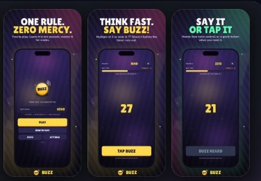
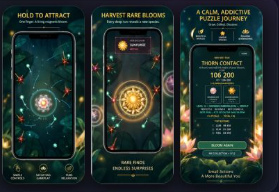

01 / SYSTEMS
Think in systems.
Understand the bigger picture, connect the pieces and design for maintainability.
I'm Ricardo Pinheiro, a Business Systems Lead Analyst and Salesforce Developer who designs, builds and integrates software — from enterprise CRM platforms to independent cloud and AI-enabled products.
I bridge business complexity and technical execution — turning real problems into software people want to use.
My background spans enterprise Salesforce development, integrations and solution design, alongside independent products across web, mobile, cloud and AI. I started experimenting with software before entering the industry professionally in 2020.
Understand the bigger picture, connect the pieces and design for maintainability.
From prototypes to functional products, with practical decisions and clear outcomes.
Thoughtful interfaces, intuitive flows and just enough personality to stand out.
A clear, reverse-chronological view of my professional career, with earlier independent learning noted at the end.
Lead requirements analysis and business systems improvements, guide Salesforce solution design, coordinate stakeholders and technical teams, and support integration decisions.
Built and improved Salesforce applications with Apex, Lightning Web Components and integrations for global business workflows.
Developed Salesforce customizations, Visualforce and Lightning Components; implemented REST, SOAP and Bulk API integrations.
Built Oracle APEX enterprise applications, reports and Oracle Database solutions.
Built small personal software projects before entering the industry professionally in 2020, developing practical programming and problem-solving skills.
Selected enterprise and independent software projects.
React Native and Expo-based mobile experience connected to Salesforce-oriented workflows. The repository confirms Expo Router, TypeScript, React Native and secure-storage dependencies.
Validation-stage B2B revenue-operations product for service businesses. Its public site uses Cloudflare static assets; payment processing and public lead collection are not yet live.
Independent web and CRM project combining an AI assistant, image visualization, quotation workflows and a management console. The repository documents demo mode pending production configuration.
Published mathematics reflex game built with Godot 4, featuring iOS speech recognition and release automation.

A portrait-oriented polarity puzzle game, part of my independent mobile game development work. Gameplay, UI and iteration are developed with Godot.

A mobile number-puzzle game developed as an independent project, bringing together puzzle mechanics, interactive interfaces and iterative testing.
Independent mobile game currently undergoing store review. Further gameplay and technical details will be added once confirmed.
Independent mobile game currently undergoing store review. Further gameplay and technical details will be added once confirmed.
Apex, Lightning Web Components, Visualforce, SOQL, administration and solution design.
REST, SOAP, Bulk API, system interoperability and business workflows.
JavaScript, TypeScript, HTML/CSS, React Native, Oracle APEX and SQL/PLSQL.
Cloudflare Workers, D1/R2 and AI API integrations in independent projects.
Six Salesforce certifications listed in my current CV.
Interested in enterprise platforms, modern software development and the intersection of cloud and AI.